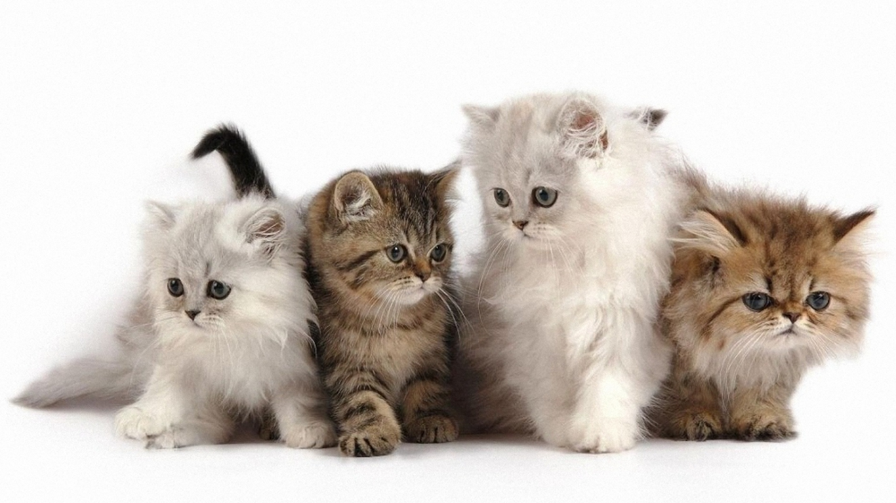

|  |
Perbandingan Kucing Persia dan Anggora
|
| Asal |
Bentuk Wajah |
Bentuk Tubuh |
Bulu |
Ekor |
Kepribadian |
Aktivitas |
Harga |
| Persia |
Ras kucing berbulu panjang yang berasal dari Persia (atau yang kita kenal sebagai Iran), dan pertama kali dikenalkan di negara Italia. |
Bentuk wajah cenderung bulat, kebanyakan hidungnya pesek atau tidak terlalu mancung (jenis persia medium). Apabila dilihat dari samping, dahi, hidung dan dagu terlihat datar. Mata lebih variasi daripada anggora. |
Badan lebih gemuk dan tubuh lebih pendek daripada anggora. Kakinya kokoh besar dengan cakar yang membulat. |
Bulunya tebal menyelimuti seluruh tubuh termasuk wajahnya. |
Bulu pada ekor kucing persia lebat seperti bulu diseluruh tubuhnya, tetapi pada bagian ekor tidak selebat kucing anggora. |
Kalem, penurut, sedikit malas dan juga manja. |
Lebih suka diam ditempat atau pun istirahat. Cara berjalannya pun lambat dan nampak sangat manja. |
Kebih murah jika dibandingkan dengan anggora, yaitu sekitar $550. |
| Anggora |
Salah satu ras kucing tertua yang konon ditemukan di daerah Ankara (Angora) di Turki sejak pada tahun 1600an. |
Bentuk wajah agak segitiga dan hidung yang sedikit mancung (seperti kucing lokal atau kucing kampung). Telinganya sedikit runcing atau memanjang. |
Tubuh kucing terlihat ideal, langsing dengan otot yang tidak menonjol. Bentuknya lebih tinggi daripada persia. |
Bulu kucing tebal tapi tidak setebal persia, tetapi pada bagian ekor bulunya sangat panjang dan juga tebal. Di bagian wajah, bulu kucing anggora tidak tebal ataupun panjang sehingga lebih cenderung sedikit lebih lebat daripada kucing lokal. |
Bulu pada ekor kucing anggora sangatlah tebal sehingga nampak seperti kemoceng atau ekor musang. |
Lebih aktif, senang bermain, energik dan juga penurut. |
Suka bermain dan juga berlari-lari. Cara berjalannya terlihat sangat luwes dan nampak begitu menggemaskan |
Terbilang mahal, yaitu sekitar $700. |